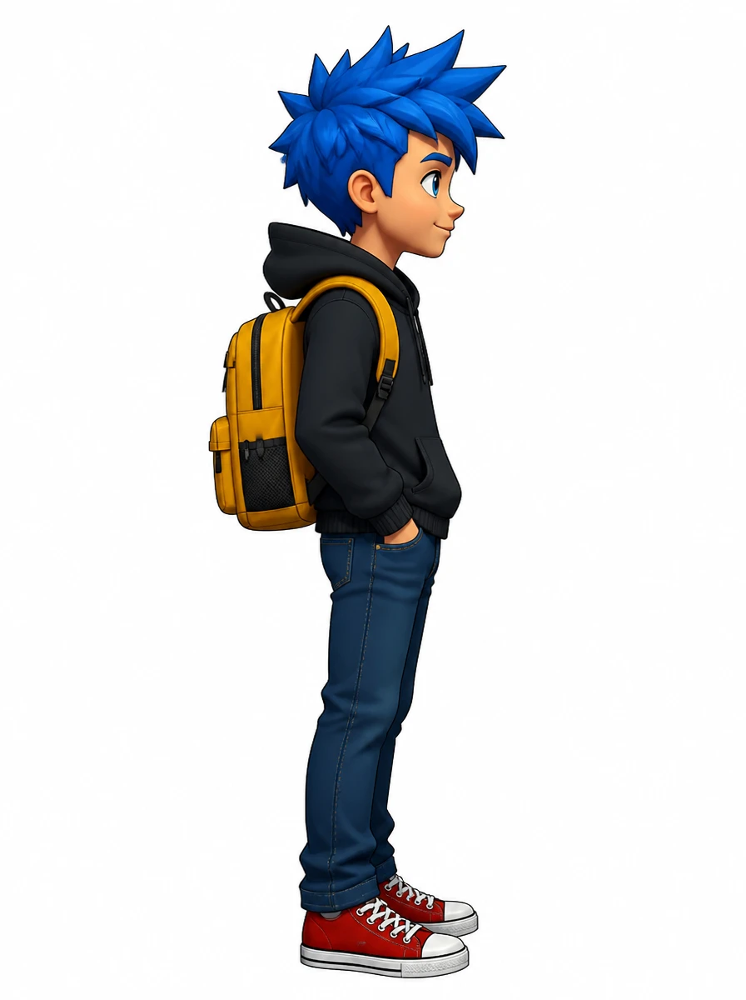
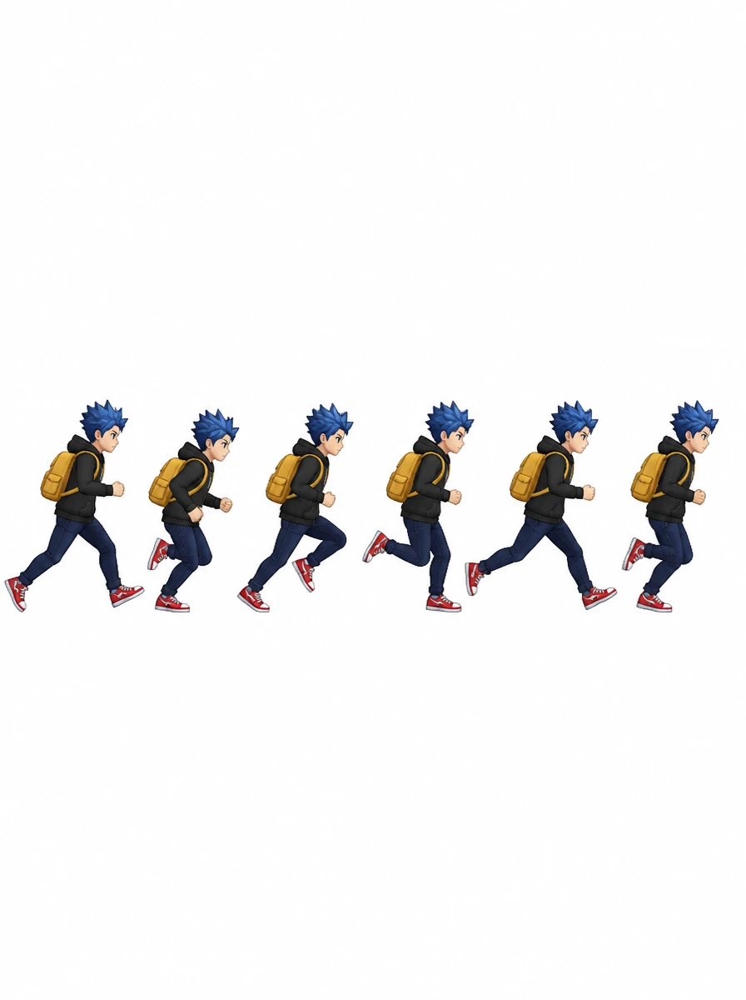
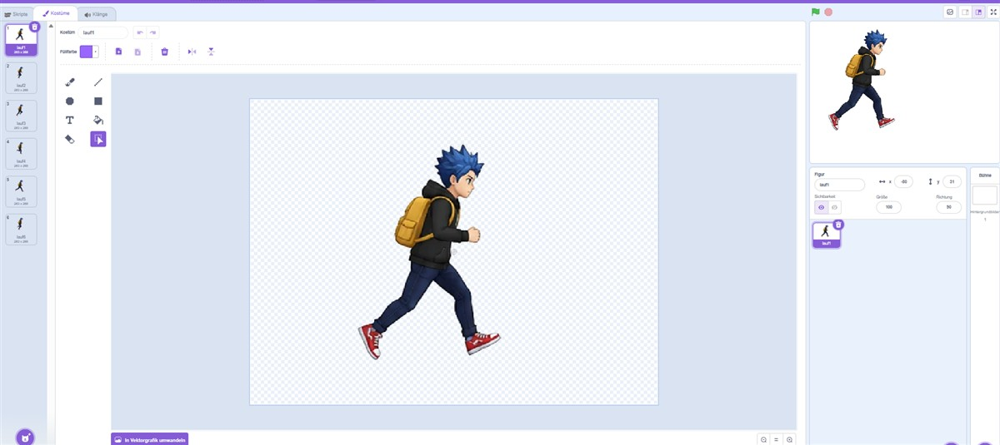

6 Laufphasen für Scratch
Du erstellst deine Spielfigur mit dem KI-Bildgenerator von Fobizz. Weil eine KI dieselbe Figur selten zweimal gleich zeichnet, lässt du alle sechs Laufphasen in einem Bild erstellen (Sprite-Sheet). In Scratch machst du daraus sechs Kostüme.
Ein Laufschritt besteht aus wiederkehrenden Phasen. Mit sechs Bildern wirkt das Laufen flüssig.
Die Seitenansicht wirkt beim Laufen am besten. Kontakt: Ferse setzt auf. Tiefpunkt: Körper am tiefsten. Durchgang: Bein schwingt vorbei.
Fülle den Steckbrief aus. Je genauer er ist, desto ähnlicher sehen die sechs Figuren aus. Ein auffälliges Merkmal (z. B. Rucksack, Mütze) hilft der KI, die Figur gleich zu halten. Auf der Lernatelier-Seite setzt sich dein Prompt automatisch zusammen.
| Feld | Beispiel | Deine Figur |
|---|---|---|
| Figur | Jugendlicher Abenteurer | |
| Zeichenstil | Comic · Pixel-Art · Anime · Cartoon | |
| Haare | blaue, stachelige Haare | |
| Oberteil | schwarzer Hoodie | |
| Hose | dunkelblaue Jeans | |
| Schuhe | rote Turnschuhe | |
| Besonderes Merkmal | gelber Rucksack | |
| Hauptfarben | Blau, Schwarz, Rot |
Zuerst prüfst du, ob die KI deine Figur richtig versteht. Kopiere Prompt 1 von der Lernatelier-Seite in Fobizz.

Jetzt lässt du alle sechs Laufbilder in einem Bild erzeugen. Der Steckbrief ist derselbe, darum bleibt die Figur gleich. Kopiere Prompt 2.

Wenn es nicht klappt: KI-Bildgeneratoren zählen oft falsch. Hat dein Bild 4, 5 oder 8 Figuren, ist das okay: Du brauchst mindestens 4 gute Phasen. Sehen die Figuren sehr verschieden aus, beschreibe das auffällige Merkmal noch genauer.
Auch die weissen Lücken zwischen den Beinen und unter den Armen anklicken.

Einzelbilder hintereinander erzeugt: Die KI zeichnet jedes Mal eine etwas andere Figur.
Lösung: alle Phasen in einem Bild, auffälliges Merkmal genau beschreiben.
Zwischen Beinen und Armen bleiben weisse Flächen. Auf der Bühne sieht man sie.
Lösung: auch jede kleine Lücke mit «keine Farbe» füllen.
Die Kostüme stehen unterschiedlich hoch oder weit links und rechts.
Lösung: alle Figuren zur Mitte, Füsse auf gleicher Höhe.
Reflexion: Was hat die KI gut gemacht? Wo musstest du selbst nachhelfen (Prompt verbessern, ausschneiden, ausrichten)? Wem gehört deine Figur: dir, der KI oder beiden?